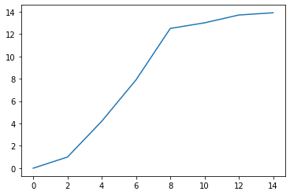
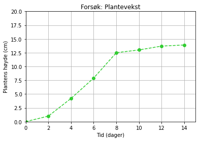
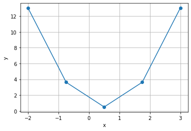
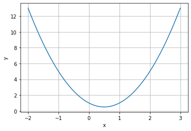
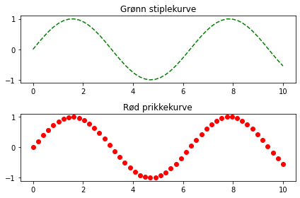

Datahåndtering I: Visualisering
Contents
Datahåndtering I: Visualisering#
Læringsutbytte
Etter å ha arbeidet med dette temaet, skal du kunne:
bruke matplotlib-biblioteket og seaborn-biblioteket til visualisering
plotte datapunkter og funksjoner
lage og tolke ulike visualiseringer
Håndtering av data blir bare viktigere og viktigere med tida. En viktig del av datahåndtering er å kunne generere fine og informative figurer som beskriver dataene på en god måte. Det blir stadig vanligere å bruke programmering til dette. Det finnes flere typer biblioteker som kan gi oss fine og profesjonelle figurer. Vi begynner med et mye brukt bibliotek som heter matplotlib. Hvis du foretrekker å importere pylab istedenfor, kan du godt gjøre det. Pylab-biblioteket inneholder også alle de samme plotteverktøyene.
Plotting av lister#
Hvis vi har få datapunkter, kan vi skrive dem inn i lister direkte i programmet vårt og plotte dem. La oss si at vi har samlet data for hvor raskt en hurtigvoksende plante vokser annenhver dag. Vi registerer dagene og høyden til planten i cm, og legger disse verdiene inn i lister.
import matplotlib.pyplot as plt # importerer relevante plotteverktøy
tid = [0, 2, 4, 6, 8, 10, 12, 14] # tid i dager
plantehøyde = [0, 1, 4.2, 7.9, 12.5, 13, 13.7, 13.9] # høyde i cm
plt.plot(tid, plantehøyde) # plotter plantehøyde mot tid
plt.show() # viser plottet

Hvis vi har lyst til å modifisere og pynte på plottet, har vi mange muligheter til det. Her er noen forslag til en del nyttige endringer av plottet ovenfor:
plt.plot(tid, plantehøyde, color = 'limegreen', marker = 'o', linestyle = '--')
plt.title("Forsøk: Plantevekst") # tittel
plt.xlabel("Tid (dager)") # x-aksetittel
plt.ylabel("Plantens høyde (cm)") # y-aksetittel
plt.xlim(0,15) # definisjonsmengde
plt.ylim(0,20) # verdimengde
plt.grid() # tegner rutenett
plt.show()

Det finnes utrolig mange måter å modifisere et plott på. Tabellene nedenfor viser en oversikt over nyttige plottekommandoer, linjestiler, markører og farger, som du kan bruke for å lage akkurat den figuren du ønsker. Du bør også søke litt rundt på nettet for å finne andre muligheter, for eksempel ved å søke på «python plotting colors» og liknende. Du må bruke internett flittig når du lurer på noe i programmering!
En veldig nyttig kommando når vi skal representere flere grafer i samme koordinatsystem, er legend. Denne kommandoen viser merkelappene (“labels”) til de ulike plottene. Programmet nedenfor gir et eksempel på dette.
Underveisoppgave
Programmet nedenfor plotter miljøgifter i ulike organismer i to innsjøer. Studer programmet og eksperimenter med ulike verdier fra tabellen nedenfor.
Plotting av funksjoner#
En datamaskin kan bare håndtere diskrete verdier, altså ikke-uendelige tallmengder. En matematisk funksjon kan derimot være kontinuerlig og ha uendelig mange funksjonsverdier. På en datamaskin må vi tilnærme denne uendelige mengden med et ganske stort antall. Dette kan vi gjøre med for eksempel linspace-kommandoen. Programmet nedenfor plotter funksjonen \(f(x) = 2x^2 - 2x + 1\) for \(x\in[-2, 3]\)
import matplotlib.pyplot as plt
import numpy as np
x = np.linspace(-2, 3, 1000) # lager 1000 x-verdier mellom -2 og 3
y = 2*x**2 - 2*x + 1 # lager 1000 tilsvarende y-verdier til en funksjon
plt.plot(x,y)
plt.xlabel('x')
plt.ylabel('y')
plt.grid()
plt.show()

Det Python egentlig gjør når den plotter funksjoner, er å plotte et bestemt antall punkter og “tegne” rette linjer mellom disse punktene. Dette kalles “lineær interpolasjon”. Det blir tydelig dersom vi kun velger ut fem punkter å plotte funksjonen i.
x = np.linspace(-2, 3, 5) # lager 5 x-verdier mellom -2 og 3
y = 2*x**2 - 2*x + 1 # lager 5 tilsvarende y-verdier til en funksjon
plt.plot(x,y,marker='o')
plt.xlabel('x')
plt.ylabel('y')
plt.grid()
plt.show()

Dersom vi definerer en Python-funksjon, kan vi også bruke denne til å generere y-verdier:
def f(x):
return 2*x**2 - 2*x + 1
x = np.linspace(-2, 3, 1000) # lager 5 x-verdier mellom -2 og 3
y = f(x) # lager 1000 tilsvarende y-verdier til en funksjon
plt.plot(x,y,)
plt.xlabel('x')
plt.ylabel('y')
plt.grid()
plt.show()

Underveisoppgave
Plott tre funksjoner i samme koordinatsystem. Eksperimenter med farger, linjestiler og annet. Husk aksetitler!
Løsningsforslag
Flere plott i samme figur#
Dersom vi ønsker å lage flere plott i samme figur, kan vi bruke kommandoen subplot(antall rader, antall kolonner, figurnummer) for å plotte flere grafer samtidig. Her er et eksempel:
import matplotlib.pyplot as plt
import numpy as np
x = np.linspace(0, 10, 50)
y = np.sin(x)
plt.subplot(2, 1, 1) # To rader, én kolonne, figur 1
plt.plot(x, y, color = "green", linestyle = "--")
plt.title("Grønn stiplekurve")
plt.subplot(2, 1, 2) # To rader, én kolonne, figur 2
plt.plot(x, y, color = "red", linestyle = " ", marker = "o")
plt.title("Rød prikkekurve")
plt.tight_layout() # Fikser slik at det ikke blir overlapp mellom f.eks. aksetitler
plt.show()
#plt.savefig("kulfigur.png") # Lagrer figuren på datamaskinen din

Underveisoppgave
Modifiser figuren ovenfor slik at plottene vises ved siden av hverandre i samme figur istedenfor under hverandre.
Løsningsforslag
Spesifiser subplottene som subplot(1, 2, 1) og subplot(1, 2, 2). Da blir det to kolonner istedenfor to rader.
Videoer#
I videoen nedenfor kan du få en innføring eller repetisjon i hvordan du plotter i Python.